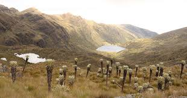
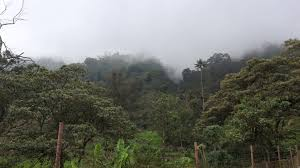
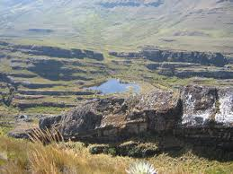

Boyacá
La flora de Boyacá, Colombia, es diversa y rica debido a su variada geografía y climas.
Boyacá cuenta con una gran variedad de ecosistemas que van desde páramos hasta bosques tropicales.
Entre las especies más destacadas se encuentran:
Especies destacadas:
1. páramos:

- Son ecosistemas únicos y vitales para la regulación del agua.
En Boyacá, los páramos albergan especies como el frailejón (Espeletia spp.),
el chuquiragua (Chuquiraga spp.), el lupino (Lupinus spp.)
y diversas especies de plantas carnívoras y orquídeas.
2. Bosques de niebla:

- Estos bosques se encuentran en zonas montañosas y húmedas.
Aquí, se pueden encontrar especies como el cedro (Cedrela spp.), el roble (Quercus spp.),
el arrayán (Myrcianthes spp.) y una gran diversidad de helechos y bromelias.
3. Bosques tropicales:
- En las zonas más bajas y cálidas de Boyacá, los bosques tropicales
albergan una gran variedad de especies arbóreas como la ceiba (Ceiba pentandra),
el guayacán (Tabebuia spp.),la caoba (Swietenia spp.) y el cedro rosado (Cedrela odorata),
entre otros.
4. Vegetación de montaña:
- En las laderas de las montañas, se encuentran especies adaptadas
a condiciones más secas y rocosas, como el cactus (Cactaceae spp.), el agave (Agave spp.),
el frailejón enano (Espeletia spp.) y diversas especies de arbustos y hierbas.
Algunos lugares destacados por su riqueza y diversidad florística en Boyacá incluyen:
1. Parque Nacional Natural Pisba:

- Este parque se encuentra en el municipio de Pesca y alberga una gran diversidad de flora y fauna.
En sus páramos y bosques de niebla se pueden encontrar especies emblemáticas como
el frailejón y una variedad de orquídeas.
2. Santuario de Fauna y Flora Guanentá Alto Río Fonce:
- Ubicado en la parte oriental de Boyacá, este santuario es conocido por su biodiversidad y belleza natural. Alberga una variedad de
ecosistemas, desde páramos hasta bosques nublados, donde se pueden encontrar especies vegetales únicas.
3. Páramo de Ocetá :
- Este páramo, ubicado en el municipio de Monguí, es conocido por su belleza escénica y su diversidad biológica. Aquí se pueden observar extensos campos de
frailejones y una variedad de especies de flora adaptadas a las condiciones extremas de altitud.
4. Valle de Sutamarchán :
- Esta zona es famosa por sus cultivos de flores, especialmente las hermosas rosas de exportación. Además de los cultivos,
el valle también cuenta con una vegetación natural variada, que incluye especies nativas y ornamentales
Cundinamarca
Cundinamarca, al igual que Boyacá, es una región de Colombia con una gran diversidad
de flora debido a sus variadas condiciones climáticas y geográficas.
Entre las especies más destacadas que se pueden encontrar en Cundinamarca están:
Especies destacadas:
1. Bosques de niebla :
- En las zonas montañosas de Cundinamarca,
los bosques de niebla son comunes y albergan una gran diversidad de especies vegetales.
Entre ellas se encuentran árboles como el roble (Quercus spp.), el cedro (Cedrela spp.),
el arrayán (Myrcianthes spp.)y una amplia variedad de epífitas, como orquídeas, bromelias y helechos.
2. Páramos: Al igual que Boyacá:
- Cundinamarca cuenta con páramos que son vitales
para la regulación del agua y albergan especies únicas adaptadas a las condiciones extremas de altura.
Entre las especies más emblemáticas se encuentran los frailejones (Espeletia spp.),
el chuquiragua (Chuquiraga spp.) y diversas especies de plantas carnívoras.
3. Bosques tropicales:
- En las zonas más bajas y cálidas de Cundinamarca,
se encuentran bosques tropicales que albergan una gran diversidad de especies arbóreas,
como la ceiba (Ceiba pentandra),
el guayacán (Tabebuia spp.), la caoba (Swietenia spp.) y el cedro rosado (Cedrela odorata).
4. Vegetación de montaña:
- En las laderas de las montañas, se pueden encontrar especies
adaptadas a condiciones más secas y rocosas, como cactus,
agaves y una variedad de arbustos y hierbas.
En Cundinamarca, hay varios lugares con una flora excepcionalmente hermosa. Uno de los más destacados es el Parque Natural Chingaza. Este parque nacional se encuentra ubicado en la cordillera oriental de los Andes, abarcando partes de los departamentos de Cundinamarca y Meta. Aquí encontrarás
una variedad impresionante de flora debido a la diversidad de ecosistemas presentes en el parque.
1. Páramos: :
- Chingaza es hogar de extensos páramos, donde puedes encontrar una gran cantidad de frailejones, plantas emblemáticas de estos ecosistemas.
Los frailejones forman paisajes surrealistas que son verdaderamente impresionantes.
2. Bosques de niebla:
- Los bosques nublados de Chingaza albergan una abundante vegetación,
incluyendo una variedad de especies de orquídeas, bromelias, helechos y árboles
como el roble y el cedro.
3. Cascadas y ríos
- : Además de la vegetación terrestre, Chingaza cuenta con numerosas cascadas y
ríos que brindan hábitats únicos para una diversidad de
plantas acuáticas y ribereñas.
Otro lugar destacado es el Parque Nacional Natural Sumapaz,
que también se encuentra en Cundinamarca. Este parque es el hogar del páramo más grande del mundo y
alberga una variedad única de flora adaptada a las duras condiciones de altitud y clima.
{% endblock %}